🔬 Leer sensores con Arduino
Guías de conexión, principio de funcionamiento y código para cada sensor.
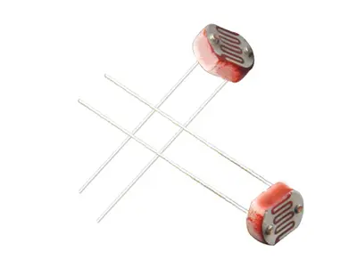
Componente LDR (Light Dependent Resistor) — sin polaridad, se conecta en cualquier orientación.
La LDR (Light Dependent Resistor) es una resistencia cuyo valor varía inversamente con la intensidad de luz que recibe. A más luz → menos resistencia (típicamente 100 Ω – 10 kΩ). A oscuridad → alta resistencia (hasta 1 MΩ). No distingue colores ni longitudes de onda específicas: solo mide luminosidad total.
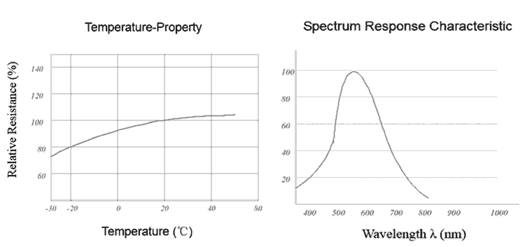
Izquierda: variación de resistencia con la temperatura. Derecha: pico de sensibilidad espectral cerca de 540 nm (luz verde/amarilla).
El material semiconductor de la LDR (sulfuro de cadmio, CdS) libera portadores de carga cuando absorbe fotones. Cuantos más fotones incidan, más portadores se generan y más baja la resistencia. Este fenómeno se llama fotoconductividad.
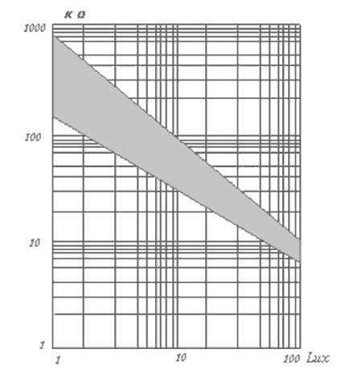
Curva característica kΩ vs lux en escala logarítmica. La relación sigue una función potencial: R = R₀·(I/I₀)^(-γ), con γ típicamente 0.5–0.8.
La LDR no se conecta directa a un pin analógico. Se arma un divisor de tensión con una resistencia fija (10 kΩ): el pin A0 lee el punto medio. Cuando baja luz la LDR sube → tensión en A0 sube. Con mucha luz la LDR baja → tensión en A0 baja.
| LDR | Arduino |
|---|---|
| Terminal 1 | 5V |
| Terminal 2 | A0 + R 10kΩ a GND |
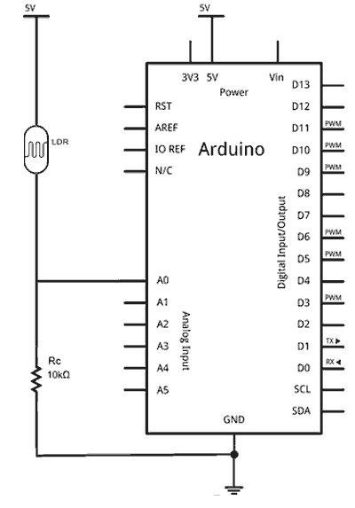
Esquema eléctrico: LDR entre 5V y A0, resistencia fija Rc=10kΩ entre A0 y GND.
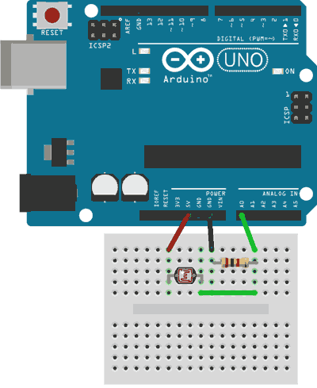
Montaje en protoboard: rojo=5V, negro=GND, verde=A0.
#define PIN_LDR A0 void setup() { Serial.begin(9600); } void loop() { int valor = analogRead(PIN_LDR); // 0–1023 Serial.println(valor); delay(200); }
#define PIN_LDR A0 #define PIN_LED 13 #define UMBRAL 500 // ajustar según entorno void setup() { pinMode(PIN_LED, OUTPUT); } void loop() { int luz = analogRead(PIN_LDR); digitalWrite(PIN_LED, luz < UMBRAL ? HIGH : LOW); delay(100); }
int luz = analogRead(A0); int pct = map(luz, 0, 1023, 0, 100); Serial.print("Luz: "); Serial.print(pct); Serial.println("%");
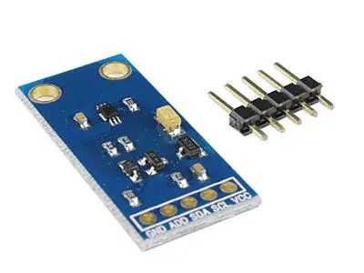
Módulo BH1750 — pines GND, ADD, SDA, SCL, VCC.
El BH1750 es un sensor digital de luz ambiental que entrega la medición directamente en lux por el bus I2C. A diferencia de la LDR, ya tiene el conversor A/D integrado y la calibración incorporada: el Arduino recibe el valor en lux listo para usar.
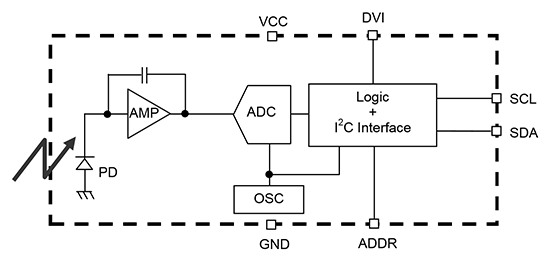
Diagrama de bloques interno: fotodiodo → amplificador → ADC → lógica I2C.
Internamente usa un fotodiodo de silicio cuya fotocorriente se convierte a frecuencia y luego a valor digital de 16 bits. El rango de medición es 1–65535 lux con resoluciones de 1 lux o 0.5 lux según el modo configurado.
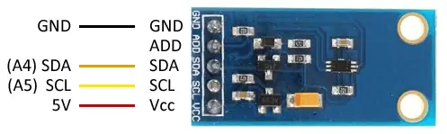
Pines del módulo: GND, ADD, SDA (A4), SCL (A5), VCC.
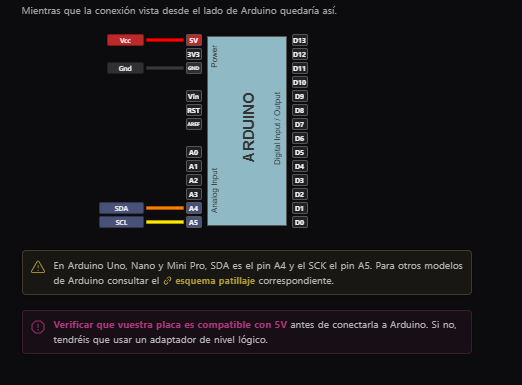
Conexión vista desde Arduino: VCC→5V, GND→GND, SDA→A4, SCL→A5. Verificar compatibilidad 5V del módulo.
| BH1750 | Arduino Uno |
|---|---|
| VCC | 3.3V o 5V |
| GND | GND |
| SCL | A5 |
| SDA | A4 |
| ADDR | GND (dir. 0x23) / 3.3V (dir. 0x5C) |
Instalá BH1750 de Christopher Laws desde el Gestor de Librerías del IDE.
#include <Wire.h> #include <BH1750.h> BH1750 sensor; void setup() { Serial.begin(9600); Wire.begin(); sensor.begin(); } void loop() { float lux = sensor.readLightLevel(); Serial.print("Luz: "); Serial.print(lux); Serial.println(" lx"); delay(500); }
| Modo | Resolución | Tiempo |
|---|---|---|
| CONTINUOUS_HIGH_RES_MODE | 1 lux | ~120 ms |
| CONTINUOUS_HIGH_RES_MODE_2 | 0.5 lux | ~120 ms |
| CONTINUOUS_LOW_RES_MODE | 4 lux | ~16 ms |
// Para mayor precisión: sensor.begin(BH1750::CONTINUOUS_HIGH_RES_MODE_2);
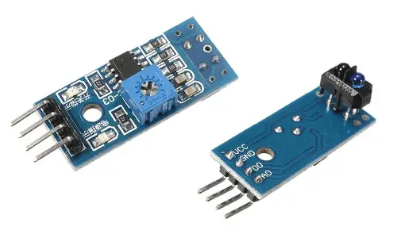
Izquierda: módulo con comparador LM393 y potenciómetro (salida digital + analógica). Derecha: módulo simple (solo salida digital).
El TCRT5000l es un sensor de reflectancia infrarroja: emite IR y mide cuánto rebota en la superficie de abajo. Una superficie oscura absorbe el IR (el sensor detecta "línea"), una superficie clara lo refleja (el sensor detecta "fondo"). Es el sensor estándar para robots seguidores de línea.
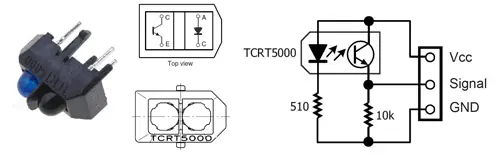
Izquierda: componente físico y vista superior. Derecha: circuito equivalente — LED IR emisor (con R=510Ω) + fototransistor receptor (con R=10kΩ a señal).
Un LED infrarrojo emite luz a ~950 nm. El fototransistor del mismo encapsulado detecta el IR reflejado. En los módulos típicos hay un comparador LM393 que genera salida digital (D0) con umbral ajustable por potenciómetro, y salida analógica (A0) con el valor crudo.
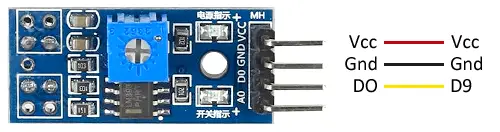
Pines del módulo con comparador: VCC→5V, GND→GND, DO→D9.
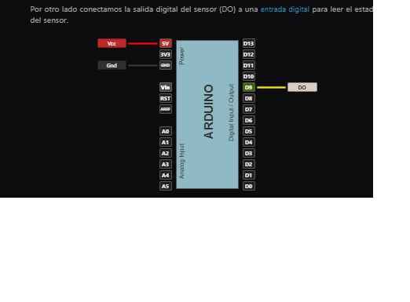
Esquema de conexión desde Arduino: salida digital DO al pin 9.
| Pin | Descripción | Arduino |
|---|---|---|
| VCC | Alimentación | 5V |
| GND | Masa | GND |
| D0 | Salida digital (HIGH = blanco, LOW = negro) | Pin digital |
| A0 | Salida analógica (0–1023) | Pin analógico |
#define SENSOR_IZQ 2 #define SENSOR_DER 3 void setup() { pinMode(SENSOR_IZQ, INPUT); pinMode(SENSOR_DER, INPUT); Serial.begin(9600); } void loop() { bool izq = !digitalRead(SENSOR_IZQ); // LOW = sobre línea negra bool der = !digitalRead(SENSOR_DER); if (izq && der) Serial.println("Recto"); else if (izq) Serial.println("Girar derecha"); else if (der) Serial.println("Girar izquierda"); else Serial.println("Sin línea"); delay(50); }
#define PIN_A A0 #define UMBRAL 400 void loop() { int val = analogRead(PIN_A); bool linea = (val < UMBRAL); Serial.println(linea ? "LÍNEA" : "FONDO"); delay(50); }
El sensor de llama detecta la radiación infrarroja emitida por el fuego, especialmente en el rango de 760–1100 nm. Es un fototransistor sensible al IR de alta frecuencia pulsante que caracteriza a una llama real. Se usa en robots apagafuegos y sistemas de alarma básicos.
El fototransistor IR responde principalmente al espectro cercano al infrarrojo emitido por la combustión. Una llama emite IR pulsante a cierta frecuencia, mientras que la luz solar o artificial emite de forma más constante. Algunos módulos incluyen filtro óptico para reducir interferencia de luz ambiental.
| Pin | Descripción | Arduino |
|---|---|---|
| VCC | Alimentación | 5V |
| GND | Masa | GND |
| D0 | Digital: LOW si detecta llama | Pin digital |
| A0 | Analógico: 0–1023 (más IR = menor valor) | Pin analógico |
#define PIN_LLAMA 2 #define PIN_BUZZER 8 void setup() { pinMode(PIN_LLAMA, INPUT); pinMode(PIN_BUZZER, OUTPUT); Serial.begin(9600); } void loop() { bool llama = !digitalRead(PIN_LLAMA); // LOW = llama detectada digitalWrite(PIN_BUZZER, llama); if (llama) Serial.println("🔥 LLAMA DETECTADA"); delay(100); }
void loop() { int val = analogRead(A0); // valor bajo = mucho IR = llama cercana if (val < 100) Serial.println("Llama muy cerca (<20cm)"); else if (val < 300) Serial.println("Llama cerca (<50cm)"); else if (val < 600) Serial.println("Llama detectada (<80cm)"); else Serial.println("Sin llama"); delay(200); }
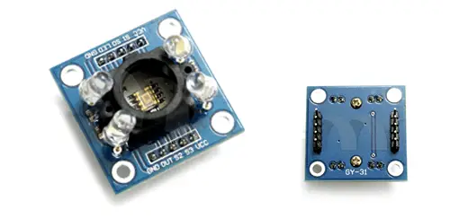
Módulo GY-31 con TCS3200: 4 LEDs blancos para iluminación, chip sensor central, y pines GND/OUT/S2/S3/S1/S0/VCC.
El TCS3200 es un sensor de color RGB que convierte la intensidad de luz filtrada a una frecuencia de salida. Contiene una matriz de 64 fotodiodos: 16 con filtro rojo, 16 verde, 16 azul y 16 sin filtro (claridad). Se selecciona el canal a medir con dos pines de control (S2, S3). La frecuencia de salida es proporcional a la intensidad del color seleccionado.
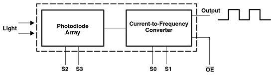
Diagrama de bloques: array de fotodiodos seleccionable (S2/S3) → conversor corriente-frecuencia → salida digital en OUT. S0/S1 escalan la frecuencia.
Cada grupo de fotodiodos genera una fotocorriente según la intensidad del color correspondiente. Esta corriente se convierte a frecuencia: más luz del color → frecuencia más alta. El Arduino mide el período con pulseIn() o con interrupciones. Los pines S0/S1 escalan la frecuencia de salida (2%, 20% o 100% del máximo).
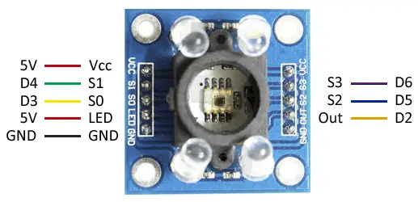
Pines del módulo GY-31: izquierda 5V→Vcc, D4→S1, D3→S0, 5V→LED, GND; derecha S3→D6, S2→D5, Out→D2.
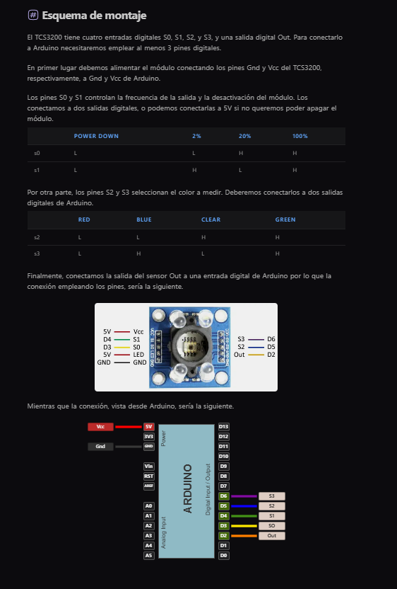
Esquema de montaje y tablas de selección: S0/S1 controlan escala de frecuencia, S2/S3 seleccionan el canal de color.
| Pin | Función | Arduino |
|---|---|---|
| VCC | Alimentación | 5V |
| GND | Masa | GND |
| OUT | Salida de frecuencia | Pin digital (2 recom.) |
| S0 | Escala de frecuencia bit 0 | Pin digital |
| S1 | Escala de frecuencia bit 1 | Pin digital |
| S2 | Selección de filtro bit 0 | Pin digital |
| S3 | Selección de filtro bit 1 | Pin digital |
| LED | LEDs blancos iluminación | 5V o pin digital |
| S2 | S3 | Filtro |
|---|---|---|
| LOW | LOW | Rojo |
| LOW | HIGH | Azul |
| HIGH | LOW | Sin filtro (claridad) |
| HIGH | HIGH | Verde |
| S0 | S1 | Escala |
|---|---|---|
| LOW | LOW | Apagado |
| LOW | HIGH | 2% |
| HIGH | LOW | 20% |
| HIGH | HIGH | 100% |
#define S0 4 #define S1 5 #define S2 6 #define S3 7 #define OUT 8 void setup() { pinMode(S0, OUTPUT); pinMode(S1, OUTPUT); pinMode(S2, OUTPUT); pinMode(S3, OUTPUT); pinMode(OUT, INPUT); digitalWrite(S0, HIGH); digitalWrite(S1, LOW); // escala 20% Serial.begin(9600); } int leerColor(bool s2, bool s3) { digitalWrite(S2, s2); digitalWrite(S3, s3); delay(10); return pulseIn(OUT, LOW); // microsegundos } void loop() { int r = leerColor(LOW, LOW); // rojo int g = leerColor(HIGH, HIGH); // verde int b = leerColor(LOW, HIGH); // azul // Periodo alto = color débil, período bajo = color fuerte Serial.print("R:"); Serial.print(r); Serial.print(" G:"); Serial.print(g); Serial.print(" B:"); Serial.println(b); delay(500); }
map(). Los valores crudos no son comparables entre distintos ambientes de luz.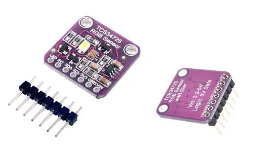
Módulo TCS34725 (placa violeta Adafruit/compatible): LED blanco integrado, pines VIN/GND/SCL/SDA/LED/INT.
El TCS34725 es un sensor de color digital con interfaz I2C. A diferencia del TCS3200, entrega los valores RGB y claridad (RGBC) ya convertidos a 16 bits digitales. Tiene compensación de infrarrojos integrada y un LED blanco incorporado en los módulos comunes. Es más preciso y fácil de usar que el TCS3200.
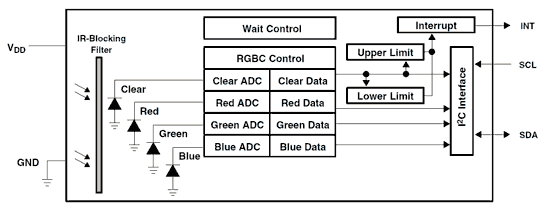
Diagrama de bloques: 4 fotodiodos (R/G/B/Clear) con filtro IR-blocking → 4 ADCs de 16 bits → interfaz I²C con interrupciones por umbral.
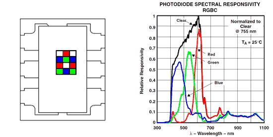
Izquierda: distribución del array de fotodiodos RGB en el chip. Derecha: respuesta espectral normalizada — R pico ~620nm, G ~540nm, B ~460nm.
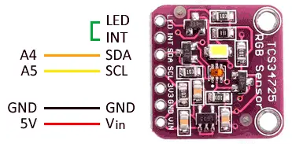
Pines: A4→SDA, A5→SCL, GND→GND, 5V→VIN. LED y INT opcionales.
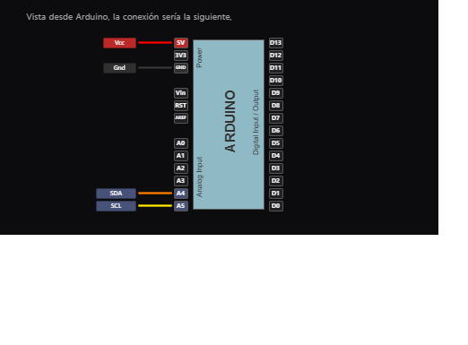
Conexión desde Arduino: VCC→5V, GND, SDA→A4, SCL→A5.
| TCS34725 | Arduino Uno |
|---|---|
| VIN / VCC | 3.3V o 5V |
| GND | GND |
| SCL | A5 |
| SDA | A4 |
| LED | GND = LED ON / 3.3V = LED OFF |
| INT | Opcional: interrupción por umbral |
Instalá Adafruit TCS34725 desde el Gestor de Librerías. También requiere Adafruit BusIO.
#include <Wire.h> #include <Adafruit_TCS34725.h> Adafruit_TCS34725 tcs = Adafruit_TCS34725( TCS34725_INTEGRATIONTIME_50MS, TCS34725_GAIN_4X ); void setup() { Serial.begin(9600); if (!tcs.begin()) { Serial.println("TCS34725 no encontrado"); while(1); } } void loop() { uint16_t r, g, b, c; tcs.getRawData(&r, &g, &b, &c); Serial.print("R:"); Serial.print(r); Serial.print(" G:"); Serial.print(g); Serial.print(" B:"); Serial.print(b); Serial.print(" C:"); Serial.println(c); delay(500); }
void loop() { uint16_t r, g, b, c; tcs.getRawData(&r, &g, &b, &c); // Normalizar dividiendo por la claridad total uint8_t R = (float)r / c * 255; uint8_t G = (float)g / c * 255; uint8_t B = (float)b / c * 255; Serial.print("RGB: ("); Serial.print(R); Serial.print(","); Serial.print(G); Serial.print(","); Serial.print(B); Serial.println(")"); delay(500); }
| Parámetro | Opciones | Uso |
|---|---|---|
| Tiempo de integración | 2.4ms / 24ms / 50ms / 154ms / 700ms | Más tiempo = más preciso, más lento |
| Ganancia | 1x / 4x / 16x / 60x | Más ganancia para ambientes oscuros |
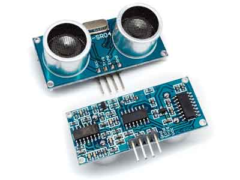
Módulo HC-SR04: transductor emisor (T) y receptor (R) de ultrasonido. Pines VCC, Trig, Echo, GND.
El HC-SR04 mide distancias entre 2 cm y 400 cm usando ultrasonidos. Emite un pulso de 40 kHz y mide el tiempo hasta recibir el eco. A diferencia de los sensores IR, no se ve afectado por el color ni la reflectividad de la superficie.
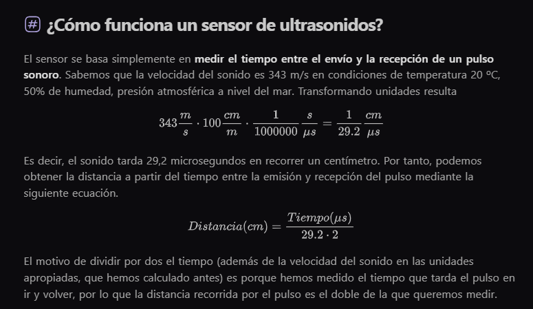
Distancia = (tiempo_echo × 0.034) / 2. El factor 0.034 es la velocidad del sonido en cm/µs.
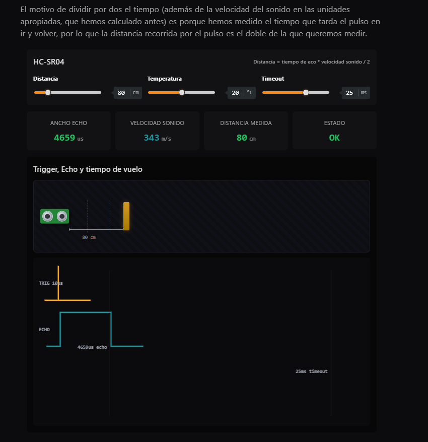
Secuencia de señales: pulso de 10µs en Trig → el sensor emite 8 ciclos a 40 kHz → Echo sube por el tiempo del viaje de ida y vuelta.
Se envía un pulso de 10 µs al pin Trig. El sensor emite 8 ciclos de ultrasonido a 40 kHz. El pin Echo sube a HIGH durante el tiempo que tarda el eco en volver. Distancia = (tiempo_echo × velocidad_sonido) / 2. A 20°C la velocidad del sonido es 343 m/s = 0.0343 cm/µs.
| Pin | Función | Arduino |
|---|---|---|
| VCC | Alimentación | 5V |
| GND | Masa | GND |
| Trig | Disparo (10µs pulse) | Pin digital (ej. D9) |
| Echo | Retorno del eco | Pin digital (ej. D10) |
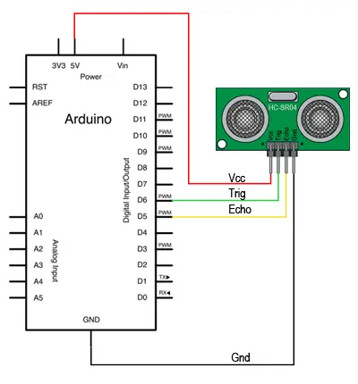
Esquema eléctrico: 5V→VCC, GND→GND, D7→Trig, D8→Echo.
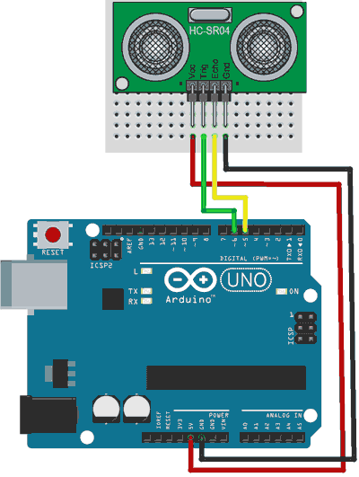
Montaje en protoboard con Arduino Uno.
#define TRIG 9 #define ECHO 10 void setup() { pinMode(TRIG, OUTPUT); pinMode(ECHO, INPUT); Serial.begin(9600); } void loop() { digitalWrite(TRIG, LOW); delayMicroseconds(2); digitalWrite(TRIG, HIGH); delayMicroseconds(10); digitalWrite(TRIG, LOW); long duracion = pulseIn(ECHO, HIGH); float cm = duracion * 0.0343 / 2.0; Serial.print("Distancia: "); Serial.print(cm); Serial.println(" cm"); delay(200); }
pulseIn(ECHO, HIGH, 30000) (30ms máx.) para evitar que el programa se cuelgue.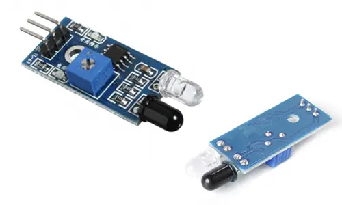
Módulos IR de obstáculos: versión con comparador LM393 (izquierda) y versión simple (derecha). Rango típico: 2–30 cm ajustable.
Sensor de proximidad que emite luz infrarroja y detecta si hay un obstáculo cerca por reflejo. Tiene salida digital (HIGH/LOW) con umbral ajustable mediante potenciómetro. A diferencia del HC-SR04, no mide distancia exacta, solo detecta presencia/ausencia dentro del rango configurado.
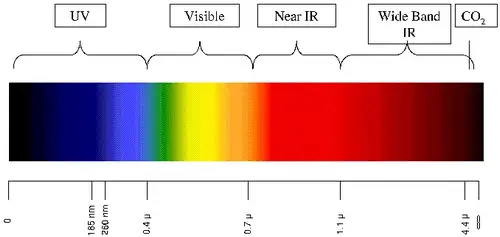
El sensor trabaja en el rango infrarrojo cercano (Near IR), entre 0.7 µm y 1.1 µm.
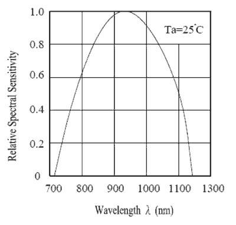
Curva de sensibilidad espectral del receptor: pico de sensibilidad ~900 nm.
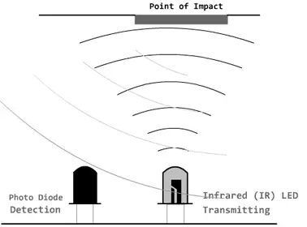
Principio: LED IR emite, fotodiodo detecta el rebote. A mayor distancia, menos IR llega al receptor.
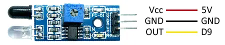
Pines del módulo: VCC→5V, GND→GND, OUT→pin digital (ej. D9).
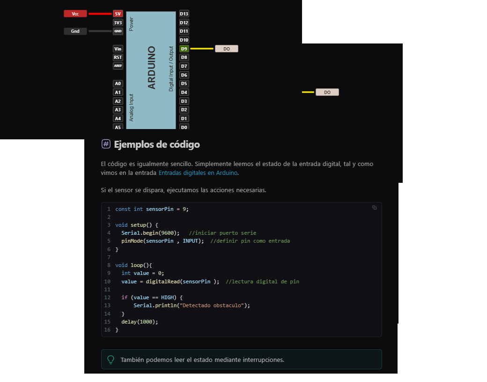
Conexión desde Arduino y ejemplo de código digital. OUT conectado a D9.
#define PIN_IR 9 void setup() { pinMode(PIN_IR, INPUT); Serial.begin(9600); } void loop() { int val = digitalRead(PIN_IR); if (val == HIGH) Serial.println("Obstáculo detectado"); delay(200); }
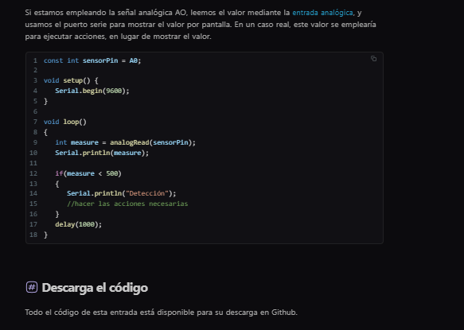
Con la salida analógica A0: valores bajos = objeto cercano, valores altos = sin obstáculo.
void loop() { int val = analogRead(A0); Serial.println(val); if (val < 500) Serial.println("Obstáculo cercano"); delay(200); }
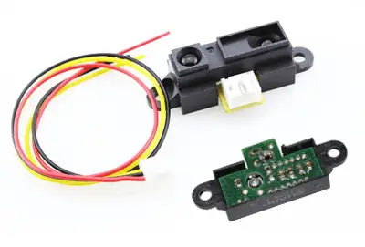
Sensor Sharp GP2Y0A02YK0F con su cable JST de 3 hilos (amarillo=señal, negro=GND, rojo=Vcc). Rango: 20–150 cm.
Sensor de distancia infrarrojo analógico de Sharp. Usa triangulación óptica para medir distancia con precisión independiente del color o reflectividad de la superficie. Entrega una tensión analógica no lineal que varía con la distancia. Rango útil: 20–150 cm.
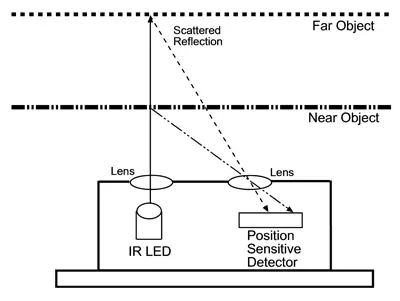
Triangulación: el LED IR emite un haz. El ángulo de reflexión varía con la distancia al objeto. Un detector PSD (Position Sensitive Detector) mide ese ángulo y lo convierte en tensión.
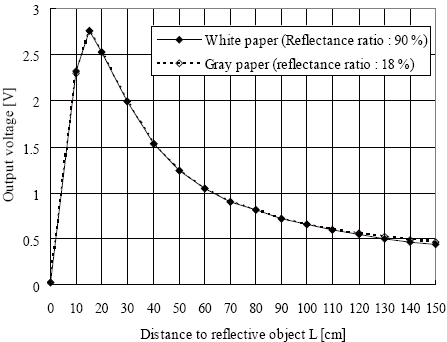
La salida NO es lineal: cerca del sensor la tensión sube abruptamente (zona no útil <20cm), luego decrece de forma suave hasta ~150cm. No usar a menos de 20 cm.
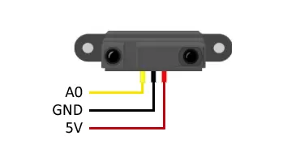
Conector JST 3 pines: amarillo→A0, negro→GND, rojo→5V.
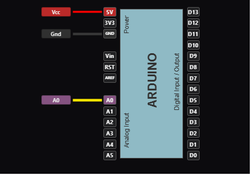
Conexión: señal analógica al pin A0, Vcc→5V, GND→GND.
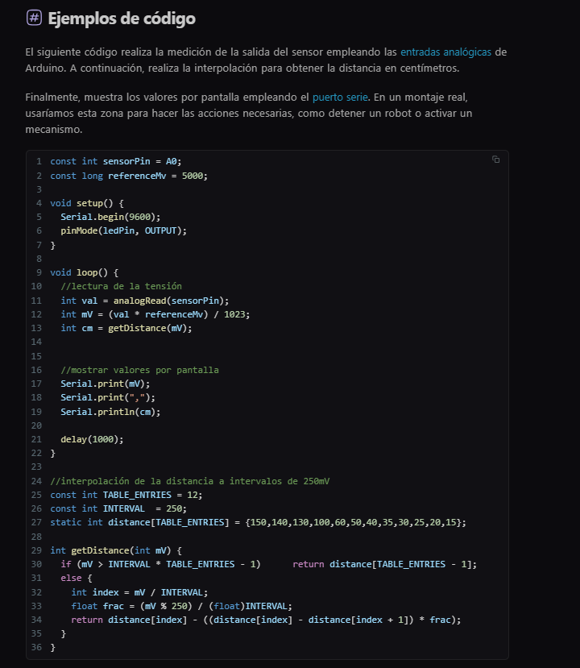
El código lee la tensión en mV e interpola en una tabla de 12 entradas para convertir a centímetros.
#define SENSOR_PIN A0 const long VREF_MV = 5000; const int TABLE_N = 12; const int INTERVAL = 250; // mV por escalón static int dist[TABLE_N] = {150,140,130,100,60,50,40,35,30,25,20,15}; int getDistance(int mV) { if (mV > INTERVAL * (TABLE_N - 1)) return dist[TABLE_N - 1]; int idx = mV / INTERVAL; float f = (mV % INTERVAL) / (float)INTERVAL; return dist[idx] - ((dist[idx] - dist[idx+1]) * f); } void setup() { Serial.begin(9600); } void loop() { int raw = analogRead(SENSOR_PIN); int mV = (long)raw * VREF_MV / 1023; Serial.print(mV); Serial.print(","); Serial.println(getDistance(mV)); delay(500); }
Versión de corto rango de la familia Sharp. Mide entre 4 y 50 cm con salida analógica (A0) o digital I2C. Usa el mismo principio de triangulación que el GP2Y0A02 pero optimizado para distancias cortas. La salida analógica entrega ~3V a 4 cm y ~0.4V a 50 cm.
| Modelo | Rango | Salida | Uso |
|---|---|---|---|
| GP2Y0A02YK0F | 20–150 cm | Analógica | Distancias medias/largas |
| GP2Y0E03 | 4–50 cm | Analógica / I2C | Distancias cortas, mayor precisión |
| Pin | Función | Arduino |
|---|---|---|
| Vcc | Alimentación | 5V |
| GND | Masa | GND |
| Vo | Salida analógica | A0 |
| SDA | I2C datos (modo digital) | A4 |
| SCL | I2C reloj (modo digital) | A5 |
void loop() { int raw = analogRead(A0); float V = raw * (5.0 / 1023.0); // Aproximación empírica: d(cm) ≈ 13.0 / V float cm = 13.0 / V; Serial.println(cm); delay(200); }
El VL53L0x es un sensor de distancia ToF (Time of Flight) de ST Microelectronics. Emite pulsos de láser a 940 nm y mide el tiempo exacto que tardan en regresar. Entrega distancia en milímetros via I2C. Rango típico: 30–1200 mm. Precisión: ±3%. No depende de reflectividad ni color.
| Pin | Función | Arduino |
|---|---|---|
| VIN | Alimentación 3.3–5V | 3.3V o 5V |
| GND | Masa | GND |
| SCL | I2C reloj | A5 |
| SDA | I2C datos | A4 |
| XSHUT | Reset activo bajo (opcional) | Pin digital |
| GPIO1 | Interrupción medición lista | Opcional |
Instalá Adafruit VL53L0X desde el Gestor de Librerías. También requiere Adafruit BusIO.
#include "Adafruit_VL53L0X.h" Adafruit_VL53L0X tof; void setup() { Serial.begin(9600); if (!tof.begin()) { Serial.println("VL53L0X no encontrado"); while(1); } } void loop() { VL53L0X_RangingMeasurementData_t m; tof.rangingTest(&m, false); if (m.RangeStatus != 4) { Serial.print("Distancia: "); Serial.print(m.RangeMilliMeter); Serial.println(" mm"); } else { Serial.println("Fuera de rango"); } delay(100); }
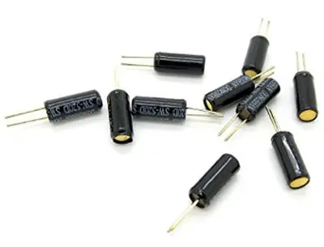
Sensor de inclinación SW-520D: cilindro metálico con dos bolas conductoras en su interior.
El SW-520D es un sensor de inclinación tipo tilt switch. Contiene dos bolitas conductoras que, según la orientación del sensor, conectan o desconectan los dos terminales. Cuando está vertical, las bolas cierran el circuito (LOW). Al inclinarse, se separan (HIGH). Sin partes móviles electrónicas, es muy simple y robusto.
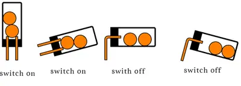
Las cuatro posiciones: vertical normal (cerrado), inclinado lateral (abierto), invertido (abierto), inclinado otro lado (abierto).
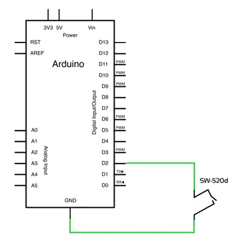
Esquema: un terminal a 5V, el otro a D2 y a GND mediante resistencia de 10 kΩ (pull-down). Al inclinar, D2 lee HIGH.
| SW-520D | Arduino |
|---|---|
| Terminal 1 | 5V |
| Terminal 2 | D2 + R 10kΩ a GND |
#define PIN_TILT 2 void setup() { pinMode(PIN_TILT, INPUT); Serial.begin(9600); } void loop() { int val = digitalRead(PIN_TILT); Serial.println(val == HIGH ? "Inclinado" : "Vertical"); delay(200); }
digitalRead con un pequeño delay o implementá debounce por software.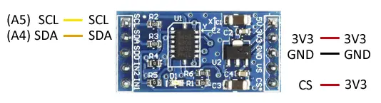
Módulo GY-291 con ADXL345: pines SCL(A5), SDA(A4), 3.3V, GND y CS.
El ADXL345 es un acelerómetro digital de 3 ejes de bajo consumo. Mide aceleración en los ejes X, Y y Z en rangos configurables de ±2g, ±4g, ±8g o ±16g. Se comunica por I2C o SPI. Aplicaciones: detección de orientación, golpes, vibraciones, paso a paso.

Conexión I2C: 3.3V→3V3, GND→GND, SDA→A4, SCL→A5, CS→3.3V (activa modo I2C).
| ADXL345 | Arduino Uno |
|---|---|
| 3.3V (VCC) | 3.3V |
| GND | GND |
| SDA | A4 |
| SCL | A5 |
| CS | 3.3V (modo I2C) |
#include <Wire.h> const int ADDR = 0x53; byte buf[6]; void writeTo(int dev, byte addr, byte val) { Wire.beginTransmission(dev); Wire.write(addr); Wire.write(val); Wire.endTransmission(); } void readFrom(int dev, byte addr, int num, byte buf[]) { Wire.beginTransmission(dev); Wire.write(addr); Wire.endTransmission(); Wire.requestFrom(dev, num); int i = 0; while(Wire.available()) buf[i++] = Wire.read(); } void setup() { Wire.begin(); Serial.begin(9600); writeTo(ADDR, 0x2D, 0x08); // Measurement mode } void loop() { readFrom(ADDR, 0x32, 6, buf); int x = (((int)buf[1])<<8) | buf[0]; int y = (((int)buf[3])<<8) | buf[2]; int z = (((int)buf[5])<<8) | buf[4]; Serial.print("x: "); Serial.print(x); Serial.print(" y: "); Serial.print(y); Serial.print(" z: "); Serial.println(z); delay(500); }
#include <SparkFun_ADXL345.h> ADXL345 adxl = ADXL345(); void setup() { Serial.begin(9600); adxl.powerOn(); adxl.setRangeSetting(16); // ±16g } void loop() { int x, y, z; adxl.readAccel(&x, &y, &z); Serial.print(x); Serial.print(", "); Serial.print(y); Serial.print(", "); Serial.println(z); delay(500); }
El MMA7455 es un acelerómetro digital de 3 ejes de Freescale (NXP). Ofrece rangos de ±2g, ±4g y ±8g, resolución de 8 o 10 bits, y detección de umbral programable para interrupciones por movimiento o golpe. Se comunica por I2C o SPI.
| MMA7455 | Arduino Uno |
|---|---|
| VCC | 3.3V |
| GND | GND |
| SDA | A4 |
| SCL | A5 |
| CS | 3.3V (modo I2C) |
#include <MMA7455.h> MMA7455 accel; void setup() { Serial.begin(9600); accel.begin(MEASURE_MODE, 2); // 2g } void loop() { int8_t x, y, z; accel.read(&x, &y, &z); Serial.print(x); Serial.print("\t"); Serial.print(y); Serial.print("\t"); Serial.println(z); delay(100); }
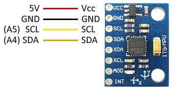
Módulo GY-521 con MPU6050: pines VCC(5V), GND, SCL(A5), SDA(A4), XDA, XCL, ADD, INT.
El MPU6050 es una IMU de 6 grados de libertad (6DOF): combina acelerómetro de 3 ejes y giroscopio de 3 ejes en un solo chip. Se comunica por I2C. Es uno de los sensores inerciales más usados con Arduino para proyectos de balanceo, drones, detección de gestos y estabilización.
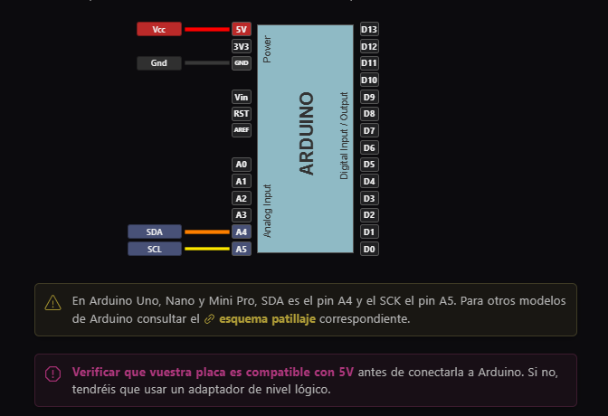
Conexión: VCC→5V, GND→GND, SDA→A4, SCL→A5. La dirección I2C por defecto es 0x68.
| MPU6050 | Arduino Uno |
|---|---|
| VCC | 5V |
| GND | GND |
| SCL | A5 |
| SDA | A4 |
| AD0 | GND (dir. 0x68) / 5V (dir. 0x69) |
#include "I2Cdev.h" #include "MPU6050.h" #include <Wire.h> const int mpuAddr = 0x68; MPU6050 mpu(mpuAddr); int ax, ay, az, gx, gy, gz; void setup() { Wire.begin(); Serial.begin(9600); mpu.initialize(); Serial.println(mpu.testConnection() ? "IMU iniciado" : "Error"); } void loop() { mpu.getAcceleration(&ax, &ay, &az); mpu.getRotation(&gx, &gy, &gz); Serial.print("a[x y z] g[x y z]: "); Serial.print(ax); Serial.print("\t"); Serial.print(ay); Serial.print("\t"); Serial.print(az); Serial.print("\t"); Serial.print(gx); Serial.print("\t"); Serial.print(gy); Serial.print("\t"); Serial.println(gz); delay(100); }
El HMC5883L es un magnetómetro digital de 3 ejes. Mide el campo magnético terrestre y permite calcular el rumbo (heading) en grados. Comunicación I2C, resolución de 12 bits. El módulo GY-273 es el más común con Arduino.
| HMC5883L | Arduino |
|---|---|
| VCC | 3.3V |
| GND | GND |
| SDA | A4 |
| SCL | A5 |
#include <Wire.h> #include <HMC5883L.h> HMC5883L compass; void setup() { Wire.begin(); Serial.begin(9600); compass.begin(); compass.setRange(HMC5883L_RANGE_1_3GA); compass.setMeasurementMode(HMC5883L_CONTINOUS); } void loop() { Vector raw = compass.readRaw(); float heading = atan2(raw.YAxis, raw.XAxis); float declinacion = 0.22; // ajustar según ubicación heading += declinacion; if (heading < 0) heading += 2 * PI; if (heading > 2 * PI) heading -= 2 * PI; Serial.print("Rumbo: "); Serial.print(heading * 180/PI); Serial.println(" °"); delay(500); }
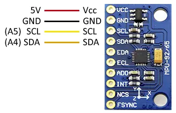
Módulo MPU-92/65: pines VCC(5V), GND, SCL(A5), SDA(A4), EDA, ECL, ADO, INT, NCS, FSYNC.
El MPU9250 es una IMU de 9 grados de libertad (9DOF): acelerómetro 3 ejes + giroscopio 3 ejes + magnetómetro 3 ejes (AK8963 integrado). Es el sucesor del MPU9150. Se comunica por I2C o SPI. Usado en sistemas AHRS (Attitude and Heading Reference System), drones, robótica y navegación inercial.
| Subsistema | Rango | Resolución |
|---|---|---|
| Acelerómetro | ±2/4/8/16 g | 16 bits |
| Giroscopio | ±250/500/1000/2000 °/s | 16 bits |
| Magnetómetro | ±4800 µT | 14/16 bits |
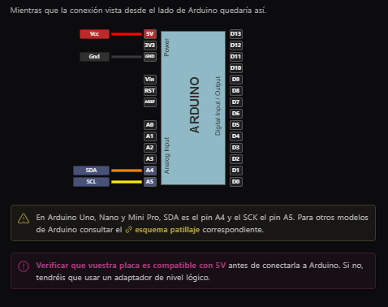
Conexión I2C: VCC→5V, GND→GND, SDA→A4, SCL→A5. Dirección: 0x68 (ADO=GND) o 0x69.
#include <Wire.h> #define MPU9250_ADDRESS 0x68 #define MAG_ADDRESS 0x0C #define ACC_FULL_SCALE_16_G 0x18 #define GYRO_FULL_SCALE_2000_DPS 0x18 void I2Cread(uint8_t Addr, uint8_t Reg, uint8_t Nb, uint8_t* Data) { Wire.beginTransmission(Addr); Wire.write(Reg); Wire.endTransmission(); Wire.requestFrom(Addr, Nb); uint8_t idx = 0; while(Wire.available()) Data[idx++] = Wire.read(); } void I2CwriteByte(uint8_t Addr, uint8_t Reg, uint8_t Data) { Wire.beginTransmission(Addr); Wire.write(Reg); Wire.write(Data); Wire.endTransmission(); } void setup() { Wire.begin(); Serial.begin(115200); I2CwriteByte(MPU9250_ADDRESS, 28, ACC_FULL_SCALE_16_G); I2CwriteByte(MPU9250_ADDRESS, 27, GYRO_FULL_SCALE_2000_DPS); I2CwriteByte(MPU9250_ADDRESS, 0x37, 0x02); // bypass magnetómetro I2CwriteByte(MAG_ADDRESS, 0x0A, 0x01); } void loop() { uint8_t Buf[14]; I2Cread(MPU9250_ADDRESS, 0x3B, 14, Buf); int16_t ax = -(Buf[0]<<8 | Buf[1]); int16_t ay = -(Buf[2]<<8 | Buf[3]); int16_t az = (Buf[4]<<8 | Buf[5]); int16_t gx = -(Buf[8]<<8 | Buf[9]); int16_t gy = -(Buf[10]<<8 | Buf[11]); int16_t gz = (Buf[12]<<8 | Buf[13]); Serial.print(ax); Serial.print("\t"); Serial.print(ay); Serial.print("\t"); Serial.print(az); Serial.print("\t"); Serial.print(gx); Serial.print("\t"); Serial.print(gy); Serial.print("\t"); Serial.println(gz); delay(10); }
Combinación de dos chips ST para obtener 9DOF: L3GD20 (giroscopio 3 ejes, ±250/500/2000 °/s) y LSM303D (acelerómetro + magnetómetro 3 ejes cada uno). Usados juntos en la placa MinIMU-9 de Pololu. Comunicación I2C o SPI.
| Chip | Dirección I2C |
|---|---|
| L3GD20 (giroscopio) | 0x6B (SA0=VCC) / 0x6A |
| LSM303D (accel+mag) | 0x1D (SA0=VCC) / 0x1E |
#include <Wire.h> #include <L3G.h> #include <LSM303.h> L3G gyro; LSM303 compass; void setup() { Wire.begin(); Serial.begin(9600); gyro.init(); gyro.enableDefault(); compass.init(); compass.enableDefault(); } void loop() { gyro.read(); compass.read(); Serial.print(gyro.g.x); Serial.print("\t"); Serial.print(gyro.g.y); Serial.print("\t"); Serial.println(gyro.g.z); delay(100); }
El SW-18020P es un sensor de vibración tipo spring switch. Contiene un resorte metálico que al vibrar contacta con un electrodo central, generando pulsos digitales. Detecta golpes, vibraciones y movimientos bruscos. Más sensible que el SW-520D a vibraciones de alta frecuencia.
| SW-18020P | Arduino |
|---|---|
| Terminal 1 | 5V |
| Terminal 2 | D2 + R 10kΩ a GND |
#define PIN_VIB 2 volatile bool vibrado = false; void ISR_vib() { vibrado = true; } void setup() { Serial.begin(9600); attachInterrupt(digitalPinToInterrupt(PIN_VIB), ISR_vib, CHANGE); } void loop() { if (vibrado) { Serial.println("Vibración detectada"); vibrado = false; delay(100); } }
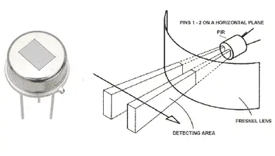
Elemento PIR piroelétrico (izquierda) y lente de Fresnel que divide el campo de visión en zonas (derecha).
El sensor PIR (Passive Infrared) detecta cambios en la radiación infrarroja emitida por cuerpos calientes en movimiento. Es pasivo: no emite nada, solo recibe. El módulo HC-SR501 incluye el sensor piroelétrico, la lente de Fresnel y el circuito de procesamiento con salida digital.
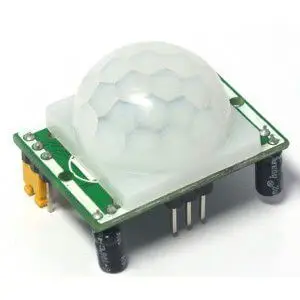
Módulo HC-SR501: detector en domo blanco, potenciómetros de sensibilidad y tiempo, jumper de modo.
Vista trasera: potenciómetro de sensibilidad (distancia 3–7m), potenciómetro de tiempo de retención (0.5–200s), jumper de modo (H=retrigger, L=single shot).
Conexión: VCC→5V, GND→GND, OUT→D2. Salida HIGH cuando detecta movimiento.
| HC-SR501 | Arduino |
|---|---|
| VCC | 5V |
| GND | GND |
| OUT | D2 |
#define PIN_PIR 2 void setup() { pinMode(PIN_PIR, INPUT); Serial.begin(9600); } void loop() { if (digitalRead(PIN_PIR) == HIGH) { Serial.println("Movimiento detectado"); delay(500); } }
El RCWL-0516 es un sensor de movimiento por radar Doppler de microondas a 3.18 GHz. Detecta movimiento de personas a través de paredes finas, puertas y vidrio (a diferencia del PIR). Rango: 5–7 metros. Salida digital HIGH cuando detecta movimiento. No requiere línea de visión directa.
| RCWL-0516 | Arduino | Función |
|---|---|---|
| VIN | 5V | Alimentación |
| GND | GND | Masa |
| OUT | D7 | Salida digital |
| 3V3 | — | Salida regulada 3.3V (100mA) |
| CDS | — | Fotoresistencia para inhibir de día |
#define PIN_RCWL 7 void setup() { pinMode(PIN_RCWL, INPUT); Serial.begin(9600); } void loop() { if (digitalRead(PIN_RCWL)) { Serial.println("Movimiento detectado"); delay(500); } }
Módulo sensor táctil capacitivo: versión de 1 canal (izquierda) y de 4 canales (derecha).
El sensor táctil capacitivo detecta el toque de un dedo sin necesidad de presión mecánica. Cuando el dedo se acerca a la superficie, cambia la capacitancia del sensor y el módulo genera una señal digital. A diferencia de un pulsador, no tiene partes móviles.
Pines del módulo: GND, Vcc (5V o 3.3V), SIG (salida digital → D9).
Esquema de conexión: SIG→D9, Vcc→5V, GND→GND.
| Táctil | Arduino |
|---|---|
| VCC | 5V |
| GND | GND |
| SIG / DO | D9 |
Al tocar: digitalRead(9) devuelve HIGH → "Contacto detectado".
#define PIN_TOUCH 9 void setup() { pinMode(PIN_TOUCH, INPUT); Serial.begin(9600); } void loop() { if (digitalRead(PIN_TOUCH) == HIGH) { Serial.println("Contacto detectado"); delay(200); } }
El MPR121 es un controlador capacitivo táctil de 12 canales con I2C. Cada canal detecta el toque de un dedo de forma independiente. Se puede conectar cualquier superficie conductora (cobre, frutas, agua, papel aluminio). Muy usado para instrumentos musicales DIY y interfaces táctiles.
| MPR121 | Arduino |
|---|---|
| VCC | 3.3V |
| GND | GND |
| SCL | A5 |
| SDA | A4 |
| IRQ | D2 (opcional) |
#include <Wire.h> #include <Adafruit_MPR121.h> Adafruit_MPR121 cap; uint16_t lasttouched = 0, currtouched = 0; void setup() { Serial.begin(9600); cap.begin(0x5A); } void loop() { currtouched = cap.touched(); for (int i = 0; i < 12; i++) { if ((currtouched & (1<<i)) && !(lasttouched & (1<<i))) Serial.println("Touch: " + String(i)); if (!(currtouched & (1<<i)) && (lasttouched & (1<<i))) Serial.println("Release: " + String(i)); } lasttouched = currtouched; }
El APDS-9960 es un sensor óptico que combina detección de gestos (arriba/abajo/izquierda/derecha), proximidad (0–10 cm), color RGBA y luz ambiental en un solo chip. Comunicación I2C. Muy usado para control sin contacto en dispositivos electrónicos.
| APDS-9960 | Arduino |
|---|---|
| VCC | 3.3V |
| GND | GND |
| SCL | A5 |
| SDA | A4 |
| INT | D2 (interrupción) |
#include <SparkFun_APDS9960.h> SparkFun_APDS9960 apds; void setup() { Serial.begin(9600); apds.init(); apds.enableGestureSensor(true); } void loop() { if (apds.isGestureAvailable()) { switch(apds.readGesture()) { case DIR_UP: Serial.println("Arriba"); break; case DIR_DOWN: Serial.println("Abajo"); break; case DIR_LEFT: Serial.println("Izquierda"); break; case DIR_RIGHT: Serial.println("Derecha"); break; } } }
El MF52 es una termistancia NTC (Negative Temperature Coefficient). Al aumentar la temperatura, su resistencia baja de forma no lineal. Se usa en divisores de tensión para medir temperatura mediante la entrada analógica de Arduino. Económico y muy preciso en rangos de −55°C a +125°C.
Curva resistencia vs temperatura: relación exponencial negativa. A 25°C el MF52 mide ~10 kΩ (modelo 103).
Divisor: MF52 entre 5V y A0, resistencia fija de 10 kΩ entre A0 y GND.
Montaje en protoboard: NTC + R fija 10 kΩ.
Código completo: lectura analógica → resistencia → temperatura con Steinhart-Hart.
#define R_FIJA 10000.0 #define R_NOM 10000.0 // resistencia NTC a 25°C #define B 3950.0 // coeficiente B del sensor #define T_NOM 298.15 // 25°C en Kelvin void setup() { Serial.begin(9600); } void loop() { int adc = analogRead(A0); float R = R_FIJA * (1023.0 / adc - 1.0); float tempK = 1.0 / (1.0/T_NOM + log(R/R_NOM)/B); float tempC = tempK - 273.15; Serial.print("Temp: "); Serial.print(tempC); Serial.println(" °C"); delay(500); }
#include <math.h> para tener acceso a log(). El coeficiente B varía según el modelo de NTC; verificar el datasheet.LM35 en encapsulado TO-92: Vcc (+5V), salida analógica (10mV/°C), GND.
El LM35 es un sensor de temperatura analógico de precisión. Su salida es una tensión proporcional a la temperatura: 10 mV por cada grado Celsius. No necesita calibración externa. Rango: 0°C a +100°C (versión básica). Simple de usar: se conecta a un pin analógico de Arduino directamente.
Esquema: Vcc→5V, GND→GND, salida→A0.
Montaje en protoboard. Verificar orientación del encapsulado.
| LM35 | Arduino |
|---|---|
| Vcc (pin 1) | 5V |
| Vout (pin 2) | A0 |
| GND (pin 3) | GND |
Conversión: mV = (analogRead(A0) × 5000) / 1024 → Celsius = mV / 10.
void setup() { Serial.begin(9600); } void loop() { int adc = analogRead(A0); float mv = adc * (5000.0 / 1024.0); float celsius = mv / 10.0; Serial.print("Temperatura: "); Serial.print(celsius); Serial.println(" °C"); delay(500); }
DHT11 (azul) y DHT22/AM2302 (gris). El DHT22 tiene mayor precisión y rango.
Los sensores DHT11 y DHT22 miden temperatura y humedad relativa. Usan un protocolo de un solo hilo (1-Wire propietario). El DHT22 (AM2302) es más preciso: temperatura ±0.5°C, humedad ±2–5%. El DHT11 es más económico pero menos preciso: temperatura ±2°C, humedad ±5%.
| Parámetro | DHT11 | DHT22 |
|---|---|---|
| Temperatura | 0–50°C, ±2°C | −40–80°C, ±0.5°C |
| Humedad | 20–90% HR, ±5% | 0–100% HR, ±2–5% |
| Muestreo | 1 vez/seg | 0.5 vez/seg |
Pines (4 patas): Vcc, Output, NC (no conectar), GND. El módulo ya incluye la resistencia de pull-up.
Conexión: Vcc→5V, GND→GND, Output→D5 con resistencia pull-up 10 kΩ a 5V.
Montaje en protoboard con Arduino Uno.
#include "DHT.h" #define DHTPIN 5 #define DHTTYPE DHT22 // DHT11 o DHT22 DHT dht(DHTPIN, DHTTYPE); void setup() { Serial.begin(9600); dht.begin(); } void loop() { delay(2000); float h = dht.readHumidity(); float t = dht.readTemperature(); if (isnan(h) || isnan(t)) { Serial.println("Error de lectura"); return; } Serial.print("Humedad: "); Serial.print(h); Serial.println(" %"); Serial.print("Temperatura: "); Serial.print(t); Serial.println(" °C"); }
Los microcontroladores ATmega328 (Arduino Uno/Nano) y ATmega32U4 (Leonardo) incluyen un sensor de temperatura interno conectado al canal analógico 8 del ADC. Mide la temperatura del chip (no del ambiente), con precisión baja (±10°C sin calibración) pero sin hardware externo.
void setup() { Serial.begin(9600); ADMUX = (_BV(REFS1) | _BV(REFS0) | _BV(MUX3)); // 1.1V ref, canal 8 delay(10); } void loop() { ADCSRA |= _BV(ADSC); while (ADCSRA & _BV(ADSC)); float temp = (ADCW - 324.31) / 1.22; // calibración aproximada Serial.print("Temp chip: "); Serial.print(temp); Serial.println(" °C"); delay(1000); }
Módulo GY-65 con BMP180: pines UCC, GND, SCL, SDA, XCLR, EOC.
El BMP180 mide presión barométrica (300–1100 hPa) y temperatura (0–65°C) por I2C. A partir de la presión se puede calcular la altitud sobre el nivel del mar. Precisión: ±0.5°C en temperatura, ±1 hPa en presión.
Pines: GND→GND, VCC→5V, SDA→A4, SCL→A5.
Conexión I2C con Arduino: SDA→A4, SCL→A5. Verificar compatibilidad 5V del módulo.
#include <SFE_BMP180.h> #include <Wire.h> SFE_BMP180 bmp180; double PresionNivelMar = 1013.25; void setup() { Serial.begin(9600); if (bmp180.begin()) Serial.println("BMP180 iniciado"); else { Serial.println("Error"); while(1); } } void loop() { char status; double T, P, A; status = bmp180.startTemperature(); if (status) { delay(status); bmp180.getTemperature(T); } status = bmp180.startPressure(3); if (status) { delay(status); bmp180.getPressure(P, T); } A = bmp180.altitude(P, PresionNivelMar); Serial.print("T: "); Serial.print(T); Serial.print(" °C P: "); Serial.print(P); Serial.print(" mb Alt: "); Serial.print(A); Serial.println(" m"); delay(1000); }
Módulo BMP280: 5V→Vcc, GND→GND, A5→SCL, A4→SDA. Dirección I2C: 0x77 (por defecto) o 0x76.
El BMP280 es el sucesor del BMP180. Mide presión (300–1100 hPa) y temperatura (−40–85°C) con mayor precisión y menor consumo. Se comunica por I2C o SPI. Resolución de presión: 0.18 Pa (equivale a ~1.5 cm de altitud). No mide humedad (para eso está el BME280).
Conexión I2C: SDA→A4, SCL→A5. La dirección cambia según SDO: GND→0x76, 3V3→0x77.
#include <Adafruit_BMP280.h> Adafruit_BMP280 bmp; void setup() { Serial.begin(9600); if (!bmp.begin()) { Serial.println(F("BMP280 no encontrado")); while (1); } bmp.setSampling(Adafruit_BMP280::MODE_NORMAL, Adafruit_BMP280::SAMPLING_X2, Adafruit_BMP280::SAMPLING_X16, Adafruit_BMP280::FILTER_X16, Adafruit_BMP280::STANDBY_MS_500); } void loop() { Serial.print(F("Temperatura = ")); Serial.print(bmp.readTemperature()); Serial.println(" °C"); Serial.print(F("Presión = ")); Serial.print(bmp.readPressure()); Serial.println(" Pa"); Serial.print(F("Altitud = ")); Serial.print(bmp.readAltitude(1013.25)); Serial.println(" m"); Serial.println(); delay(2000); }
Adafruit_BMP280.h y cambiar #define BMP280_ADDRESS (0x77) a (0x76).El MLX90614 es un termómetro infrarrojo sin contacto de Melexis. Mide la temperatura de un objeto (T_objeto) y la temperatura ambiente (T_ambiente) simultáneamente por I2C, sin necesitar tocar el objeto. Rango: −70°C a +380°C (objeto), precisión ±0.5°C. Campo de visión: 35° o 10° según modelo.
| MLX90614 | Arduino |
|---|---|
| VCC | 3.3V |
| GND | GND |
| SDA | A4 + R 4.7kΩ a 3.3V |
| SCL | A5 + R 4.7kΩ a 3.3V |
#include <Adafruit_MLX90614.h> Adafruit_MLX90614 mlx; void setup() { Serial.begin(9600); mlx.begin(); } void loop() { Serial.print("Ambiente: "); Serial.print(mlx.readAmbientTempC()); Serial.println(" °C"); Serial.print("Objeto: "); Serial.print(mlx.readObjectTempC()); Serial.println(" °C"); delay(500); }
Familia MQ: MQ-2 (gas/humo), MQ (multi-gas), MQ-3 (alcohol). Cada modelo detecta gases específicos.
Los sensores MQxx son detectores de gas electroquímicos. El elemento sensible es una resistencia de SnO₂ cuya conductividad varía al estar expuesto a distintos gases. La resistencia baja cuando hay gas presente. Tienen salida analógica (concentración) y digital (umbral ajustable con potenciómetro).
| Modelo | Gas principal |
|---|---|
| MQ-2 | Humo, GLP, butano, propano |
| MQ-3 | Alcohol, etanol |
| MQ-4 | Gas natural, metano |
| MQ-5 | GLP, gas natural |
| MQ-7 | Monóxido de carbono (CO) |
| MQ-135 | Calidad de aire, NH₃, NOₓ, CO₂ |
Pines del módulo: DO→D9 (digital), AO→A0 (analógico), GND, Vcc (5V). Potenciómetro para ajuste de umbral digital.
const int MQ_PIN = 2; const int MQ_DELAY = 2000; void setup() { Serial.begin(9600); } void loop() { bool state = digitalRead(MQ_PIN); if (!state) Serial.println("Deteccion"); else Serial.println("No detectado"); delay(MQ_DELAY); }
const int MQ_PIN = A0; void setup() { Serial.begin(9600); } void loop() { int raw_adc = analogRead(MQ_PIN); float value_adc = raw_adc * (5.0 / 1023.0); Serial.print("Raw: "); Serial.println(raw_adc); Serial.print("Tension: "); Serial.println(value_adc); delay(2000); }
El BME280 de Bosch mide temperatura, humedad y presión barométrica en un solo chip I2C/SPI. Es el BMP280 con sensor de humedad agregado. Precisión: ±0.5°C, ±3% HR, ±1 hPa. Consumo ultra-bajo: 3.6 µA en modo normal. Ideal para estaciones meteorológicas.
| BME280 | Arduino |
|---|---|
| VCC | 3.3V o 5V (según módulo) |
| GND | GND |
| SCL | A5 |
| SDA | A4 |
#include <Adafruit_BME280.h> Adafruit_BME280 bme; void setup() { Serial.begin(9600); bme.begin(0x76); } void loop() { Serial.print("T: "); Serial.print(bme.readTemperature()); Serial.println("°C"); Serial.print("HR: "); Serial.print(bme.readHumidity()); Serial.println("%"); Serial.print("P: "); Serial.print(bme.readPressure()/100.0F); Serial.println("hPa"); delay(2000); }
El BME680 es el BME280 con un sensor MOX de calidad de aire (VOC / IAQ) adicional. Mide temperatura, humedad, presión y gas (resistencia del sensor MOX en Ω, correlacionada con COVs, CO₂ equivalente e Índice de Calidad de Aire IAQ). Requiere calibración de 5 minutos al encender.
#include <Adafruit_BME680.h> Adafruit_BME680 bme; void setup() { Serial.begin(115200); bme.begin(); bme.setTemperatureOversampling(BME680_OS_8X); bme.setHumidityOversampling(BME680_OS_2X); bme.setPressureOversampling(BME680_OS_4X); bme.setGasHeater(320, 150); // 320°C, 150ms } void loop() { if (bme.performReading()) { Serial.print("T:"); Serial.print(bme.temperature); Serial.print(" HR:"); Serial.print(bme.humidity); Serial.print(" Gas:"); Serial.print(bme.gas_resistance/1000.0); Serial.println(" kΩ"); } delay(2000); }
El CCS811 es un sensor digital de calidad de aire interior. Mide CO₂ equivalente (eCO₂, 400–8192 ppm) y Compuestos Orgánicos Volátiles Totales (TVOC, 0–1187 ppb) por I2C. Requiere 20 minutos de burn-in inicial y mejora con calibración ambiental usando T° y HR del entorno.
| CCS811 | Arduino |
|---|---|
| VCC | 3.3V |
| GND | GND |
| SCL | A5 |
| SDA | A4 |
| WAKE | GND (siempre activo) |
#include <Adafruit_CCS811.h> Adafruit_CCS811 ccs; void setup() { Serial.begin(9600); ccs.begin(); while(!ccs.available()); } void loop() { if (ccs.available() && !ccs.readData()) { Serial.print("CO2: "); Serial.print(ccs.geteCO2()); Serial.print(" ppm TVOC: "); Serial.print(ccs.getTVOC()); Serial.println(" ppb"); } delay(1000); }
Kit sensor de lluvia: placa detectora con pistas de cobre (izquierda) y módulo comparador LM393 con potenciómetro (derecha).
El sensor de lluvia detecta la presencia de agua sobre la placa detectora mediante la variación de resistencia entre las pistas de cobre. Al caer agua, las pistas se corto-circuitan parcialmente, bajando la resistencia. El módulo tiene salida analógica (cantidad) y digital (umbral ajustable).
Pines: A0 (analógico, concentración), D0 (digital, umbral), GND, Vcc (5V). D0→Pin9.

Módulo: potenciómetro de ajuste de sensibilidad, LED de encendido, LED de señal digital.
const int sensorPin = 9; void setup() { Serial.begin(9600); pinMode(sensorPin, INPUT); } void loop() { int value = digitalRead(sensorPin); if (value == LOW) Serial.println("Detectada lluvia"); delay(1000); }
Kit FC-28: sonda bimetálica (FC-28) y módulo comparador. La sonda se inserta en la tierra.
El sensor FC-28 mide la humedad del suelo mediante conductividad eléctrica entre dos electrodos. A mayor humedad, mayor conductividad → menor resistencia → mayor tensión en la salida analógica. El módulo incluye comparador LM393 con salida digital ajustable.
Conexión: Vcc→5V, GND→GND, A0→A0. La sonda se conecta al módulo con cable.
Módulo: ajuste de sensibilidad (potenciómetro), LED encendido y LED de señal digital. Salidas: Vcc, GND, DO, AO.
const int sensorPin = A0; void setup() { Serial.begin(9600); } void loop() { int humedad = analogRead(sensorPin); Serial.print("Humedad: "); Serial.println(humedad); if (humedad < 500) Serial.println("Encendido"); delay(1000); }
Los sensores capacitivos de humedad de suelo miden la constante dieléctrica del suelo (que varía con el agua). A diferencia del FC-28 resistivo, no usan corriente eléctrica a través del suelo: no se corroen con el tiempo. Salida analógica entre 0–3.3V (seco≈2.8V, mojado≈1.2V). El modelo más común es el STEMMA Soil Sensor de Adafruit o el capacitivo genérico v1.2.
| Sensor | Arduino |
|---|---|
| VCC | 3.3V o 5V |
| GND | GND |
| AOUT | A0 |
void setup() { Serial.begin(9600); } void loop() { int val = analogRead(A0); int pct = map(val, 290, 640, 100, 0); // calibrar con tu sensor pct = constrain(pct, 0, 100); Serial.print("Humedad suelo: "); Serial.print(pct); Serial.println("%"); delay(1000); }
El DS18B20 es un sensor de temperatura digital de un solo hilo (1-Wire) de Dallas/Maxim. Encapsulado TO-92 o versión sumergible en sonda de acero inoxidable para medir líquidos. Rango: −55°C a +125°C, precisión ±0.5°C. Cada chip tiene una dirección de 64 bits única: se pueden conectar múltiples sensores al mismo pin de datos.
| DS18B20 | Arduino |
|---|---|
| GND (negro) | GND |
| DQ (amarillo) | D5 + R 4.7kΩ a 5V |
| VDD (rojo) | 5V |
#include <OneWire.h> #include <DallasTemperature.h> OneWire oneWire(5); DallasTemperature sensors(&oneWire); void setup() { Serial.begin(9600); sensors.begin(); } void loop() { sensors.requestTemperatures(); float t = sensors.getTempCByIndex(0); Serial.print("Temperatura: "); Serial.print(t); Serial.println(" °C"); delay(1000); }
sensors.getDeviceCount() para saber cuántos hay e iterar con getTempCByIndex(i). La resistencia 4.7 kΩ pull-up es obligatoria.Caudalímetros: YF-S201 (1/2", 1–30 L/min) y FS300A (3/4", 1–60 L/min). Tres cables: Vcc (rojo), Sig (amarillo), GND (negro).
El caudalímetro mide el flujo de líquido que pasa por su interior. Contiene un rotor con paletas: al fluir el líquido, el rotor gira. Un sensor Hall detecta cada giro y genera pulsos. La frecuencia de los pulsos es proporcional al caudal.
Fórmula: Q(L/min) = f(Hz) / K. Factor K: YF-S201=7.5, FS300A=5.5, FS400A=3.5. Precisión ±10%.
Conexión: Vcc→5V, GND→GND, Sig→D2 (pin de interrupción).
const int sensorPin = 2; const int measureInterval = 2500; volatile int pulseConter; const float factorK = 7.5; // YF-S201 void ISRCountPulse() { pulseConter++; } float GetFrequency() { pulseConter = 0; interrupts(); delay(measureInterval); noInterrupts(); return (float)pulseConter * 1000 / measureInterval; } void setup() { Serial.begin(9600); attachInterrupt(digitalPinToInterrupt(sensorPin), ISRCountPulse, RISING); } void loop() { float frequency = GetFrequency(); float flow_Lmin = frequency / factorK; Serial.print("Frecuencia: "); Serial.print(frequency, 0); Serial.print(" Hz\tCaudal: "); Serial.print(flow_Lmin, 3); Serial.println(" L/min"); }
Bombas de agua DC: sumergible (izquierda) y de superficie (derecha). Voltaje típico: 5–12V DC.
Las mini-bombas de agua DC se usan en proyectos de riego automático, fuentes y sistemas hidropónicos. No se conectan directamente a Arduino (consumen demasiada corriente): se controlan con un módulo MOSFET (IRF520N) o relé. Arduino solo envía la señal de control.
Interior: motor DC, rotor y hélice. La bomba trabaja sumergida o en línea según el tipo.
Esquema: D9→SIG del módulo IRF520N, 5V→Vcc, GND común. La bomba se conecta entre Vin (5–24V) y GND del módulo. Diodo Fly-Back en paralelo con la bomba.
#define PIN_BOMBA 9 void setup() { pinMode(PIN_BOMBA, OUTPUT); } void loop() { digitalWrite(PIN_BOMBA, HIGH); // Encender bomba delay(5000); digitalWrite(PIN_BOMBA, LOW); // Apagar bomba delay(10000); }
El INA219 es un monitor de corriente y tensión por I2C. Mide la caída de tensión en una resistencia shunt (0.1Ω incluida en el módulo) para calcular corriente continua con precisión de 1%. Además mide tensión del bus (0–26V) y calcula potencia. Rango: ±3.2A. Dirección I2C seleccionable con puentes.
El módulo se inserta en serie con la carga: VIN+ al positivo de la fuente, VIN− al positivo de la carga. GND→GND, VCC→5V, SDA→A4, SCL→A5.
#include <Adafruit_INA219.h> Adafruit_INA219 ina219; void setup() { Serial.begin(9600); ina219.begin(); } void loop() { float V = ina219.getBusVoltage_V(); float mA = ina219.getCurrent_mA(); float mW = ina219.getPower_mW(); Serial.print("Bus: "); Serial.print(V); Serial.print("V I: "); Serial.print(mA); Serial.print("mA P: "); Serial.print(mW); Serial.println("mW"); delay(500); }
El ACS712 es un sensor de corriente por efecto Hall. Mide corriente AC o DC en aislamiento galvánico: la corriente pasa por el conductor interno y el campo magnético generado mueve la salida analógica. Versiones: 5A (185 mV/A), 20A (100 mV/A), 30A (66 mV/A). Punto cero = VCC/2 = 2.5V sin corriente.
| ACS712 | Arduino |
|---|---|
| VCC | 5V |
| GND | GND |
| OUT | A0 |
#define SENS 0.185f // 185mV/A para modelo 5A void setup() { Serial.begin(9600); } void loop() { int raw = analogRead(A0); float V = raw * (5.0f / 1023.0f); float I = (V - 2.5f) / SENS; Serial.print("I: "); Serial.print(I, 3); Serial.println(" A"); delay(500); }
El SCT-013 es un transformador de corriente no invasivo. Se abre y rodea el cable de fase sin cortar el circuito. La corriente AC genera un campo magnético que induce una corriente secundaria proporcional. Modelo SCT-013-000 (sin carga): 100A máx, necesita resistencia burden. SCT-013-030: 30A máx, con burden 62Ω interno.
#include <EmonLib.h> EnergyMonitor emon1; void setup() { Serial.begin(9600); emon1.current(1, 111.1); // pin A1, calibración (ICAL) } void loop() { double Irms = emon1.calcIrms(1480); Serial.print("Irms: "); Serial.print(Irms); Serial.println(" A"); Serial.print("Pot aprox: "); Serial.print(Irms*220); Serial.println(" W"); delay(1000); }
El módulo FZ0430 (sensor de voltaje) es un simple divisor de tensión de 5:1 (R1=30kΩ, R2=7.5kΩ). Permite medir tensiones DC de hasta 25V con la entrada analógica de Arduino (máx 5V). La salida en A0 se convierte: V_real = V_A0 × 5.0.
#define PIN_V A0 #define FACTOR 5.0f // relación divisor 5:1 void setup() { Serial.begin(9600); } void loop() { float v_medido = analogRead(PIN_V) * (5.0f / 1023.0f); float v_real = v_medido * FACTOR; Serial.print("Tensión: "); Serial.print(v_real, 2); Serial.println(" V"); delay(500); }
Para medir tensión alterna de red (220/230V AC) se usan módulos basados en transformadores de tensión ZMPT101B. El transformador reduce y aísla galvánicamente la señal AC. La salida analógica (ondas de 0 a 5V centradas en 2.5V) se procesa con EmonLib para calcular el valor RMS.
#include <EmonLib.h> EnergyMonitor emon1; void setup() { Serial.begin(9600); emon1.voltage(2, 234.26, 1.7); // A2, calibración VCAL, fase } void loop() { emon1.calcVI(20, 2000); Serial.print("Vrms: "); Serial.print(emon1.Vrms); Serial.println(" V"); delay(1000); }
El H11AA1 es un optoacoplador que detecta el cruce por cero de la tensión alterna. En cada semiciclo de la onda senoidal, cuando la tensión pasa por 0V, el optoacoplador genera un pulso digital. Sirve para sincronizar el disparo de triacs/SCRs en control de potencia (dimmer, control de velocidad) y para medir frecuencia de red.
#define PIN_ZC 2 volatile bool cruceZero = false; void ISR_zero() { cruceZero = true; } void setup() { Serial.begin(9600); attachInterrupt(digitalPinToInterrupt(PIN_ZC), ISR_zero, RISING); } void loop() { if (cruceZero) { // Aquí lanzar delay y disparar triac/SSR cruceZero = false; } }
Un reed switch es un interruptor hermético sellado en vidrio con dos láminas de material ferromagnético. Al acercar un imán, las láminas se atraen y cierran el circuito. Al alejar el imán, se abren. Equivalente a un pulsador sin contacto mecánico. Muy usado en alarmas de puertas/ventanas y encoders de velocidad.
| Reed | Arduino |
|---|---|
| Terminal 1 | D9 |
| Terminal 2 | GND |
#define PIN_REED 9 void setup() { pinMode(PIN_REED, INPUT_PULLUP); Serial.begin(9600); } void loop() { Serial.println(digitalRead(PIN_REED) == LOW ? "Imán cerca" : "Sin imán"); delay(200); }
El 49E es un sensor Hall analógico lineal. La tensión de salida varía linealmente con la intensidad del campo magnético: sin campo = VCC/2 (2.5V), campo norte = sube, campo sur = baja. Permite medir intensidad y dirección del campo magnético, posición angular, y detectar corrientes (combinado con un conductor).
| 49E | Arduino |
|---|---|
| VCC (pin 1) | 5V |
| GND (pin 2) | GND |
| OUT (pin 3) | A0 |
void loop() { int raw = analogRead(A0); float V = raw * (5.0 / 1023.0); Serial.print("Campo: "); Serial.print(V); Serial.println("V (2.5=neutro)"); delay(200); }
El A3144 es un sensor Hall digital unipolar. Con salida de colector abierto: cuando detecta campo magnético suficiente (polo sur del imán), la salida va a LOW. Al alejar el imán, regresa a HIGH (con pull-up). Ideal para encoders, detección de RPM, posición de fin de carrera sin contacto y puertas de seguridad.
| A3144 | Arduino |
|---|---|
| VCC (pin 1) | 5V |
| GND (pin 2) | GND |
| OUT (pin 3) | D9 + R 10kΩ a 5V |
#define PIN_HALL 9 void setup() { pinMode(PIN_HALL, INPUT_PULLUP); Serial.begin(9600); } void loop() { Serial.println(digitalRead(PIN_HALL) == LOW ? "Imán detectado" : "Sin imán"); delay(100); }
Los sensores inductivos de proximidad detectan metales ferrosos y no ferrosos sin contacto. Generan un campo electromagnético oscilante. Al acercar un metal, se inducen corrientes de Foucault que amortiguan la oscilación: el circuito detecta el cambio y activa la salida digital (NPN o PNP). Rango: 2–40 mm según modelo. Muy usados en automatización industrial.
| Tipo | Sin metal | Con metal |
|---|---|---|
| NPN NO | HIGH | LOW |
| NPN NC | LOW | HIGH |
| PNP NO | LOW | HIGH |
#define PIN_IND 9 void setup() { pinMode(PIN_IND, INPUT); Serial.begin(9600); } void loop() { Serial.println(digitalRead(PIN_IND) == LOW ? "Metal detectado" : "Libre"); delay(100); }
Los módulos RTC (Real Time Clock) mantienen la hora y fecha actuales con una batería de litio (CR2032) incluso sin alimentación. El DS3231 es más preciso (±2 ppm, oscilador compensado por temperatura) que el DS1307 (±20 ppm). Ambos usan I2C. Incluyen EEPROM para almacenamiento.
| Parámetro | DS1307 | DS3231 |
|---|---|---|
| Precisión | ±20 ppm (~1.7 seg/día) | ±2 ppm (~0.17 seg/día) |
| Temperatura | No | Sí (±3°C) |
| VCC | 5V | 3.3–5.5V |
| RTC | Arduino |
|---|---|
| VCC | 5V (DS1307) / 3.3–5V (DS3231) |
| GND | GND |
| SCL | A5 |
| SDA | A4 |
#include <RTClib.h> RTC_DS3231 rtc; // o RTC_DS1307 para el otro modelo void setup() { Serial.begin(9600); rtc.begin(); if (rtc.lostPower()) rtc.adjust(DateTime(F(__DATE__), F(__TIME__))); } void loop() { DateTime now = rtc.now(); Serial.print(now.year()); Serial.print("/"); Serial.print(now.month()); Serial.print("/"); Serial.print(now.day()); Serial.print(" "); Serial.print(now.hour()); Serial.print(":"); Serial.print(now.minute()); Serial.print(":"); Serial.println(now.second()); delay(1000); }
El RC522 es un lector/escritor RFID de 13.56 MHz. Lee y escribe tarjetas y llaveros Mifare Classic 1K (los más comunes). Interfaz SPI. Rango de lectura: 5–10 cm. El UID de cada tarjeta es único y sirve para control de acceso, identificación de objetos o sistemas de pago DIY.
| RC522 | Arduino Uno |
|---|---|
| SDA (SS) | D10 |
| SCK | D13 |
| MOSI | D11 |
| MISO | D12 |
| RST | D9 |
| 3.3V | 3.3V |
| GND | GND |
#include <SPI.h> #include <MFRC522.h> MFRC522 rfid(10, 9); // SS=D10, RST=D9 void setup() { SPI.begin(); Serial.begin(9600); rfid.PCD_Init(); } void loop() { if (!rfid.PICC_IsNewCardPresent() || !rfid.PICC_ReadCardSerial()) return; Serial.print("UID: "); for (byte i = 0; i < rfid.uid.size; i++) { Serial.print(rfid.uid.uidByte[i] < 0x10 ? " 0" : " "); Serial.print(rfid.uid.uidByte[i], HEX); } Serial.println(); rfid.PICC_HaltA(); }
El PN532 es un controlador NFC de NXP que soporta los estándares ISO14443A/B y NFC (ISO18092). A diferencia del RC522, puede operar como lector, emulador de tarjeta y peer-to-peer. Lee tarjetas Mifare, NTAG, FeliCa y puede comunicarse con smartphones NFC. Interfaces disponibles: SPI, I2C o UART según puentes del módulo.
#include <Wire.h> #include <Adafruit_PN532.h> Adafruit_PN532 nfc(-1, -1); // modo I2C void setup() { Serial.begin(115200); nfc.begin(); nfc.SAMConfig(); } void loop() { uint8_t uid[7], len; if (nfc.readPassiveTargetID(PN532_MIFARE_ISO14443A, uid, &len)) { Serial.print("UID: "); for (int i = 0; i < len; i++) { Serial.print(uid[i], HEX); Serial.print(" "); } Serial.println(); } }
El FPM10A (también conocido como R307, AS608, ZFM-20) es un módulo de huellas dactilares óptico. Incluye sensor óptico, DSP y memoria Flash para almacenar hasta 127 plantillas de huellas. Comunicación UART. Permite registrar huellas, verificar y buscar en la base. Operación a 3.3V (UART) con alimentación de 5V.
| FPM10A | Arduino |
|---|---|
| VCC (rojo) | 5V |
| GND (negro) | GND |
| TX (amarillo) | D2 (SoftSerial RX) |
| RX (verde) | D3 (SoftSerial TX) via divisor 3.3V |
#include <Adafruit_Fingerprint.h> #include <SoftwareSerial.h> SoftwareSerial mySerial(2, 3); Adafruit_Fingerprint finger(&mySerial); void setup() { Serial.begin(9600); finger.begin(57600); } void loop() { if (finger.getImage() == FINGERPRINT_OK) { if (finger.image2Tz() == FINGERPRINT_OK) { if (finger.fingerFastSearch() == FINGERPRINT_OK) Serial.println("ID: " + String(finger.fingerID)); else Serial.println("No encontrado"); } } }
El MAX30102 de Maxim es un sensor óptico de pulsioximetría y frecuencia cardíaca. Usa LED rojo (660 nm) y LED IR (880 nm) junto con un fotodetector para medir la absorción de la sangre y calcular SpO₂ y BPM. Comunicación I2C. Opera a 1.8V internamente pero el módulo incluye regulador y es compatible con 3.3–5V.
| MAX30102 | Arduino |
|---|---|
| VIN | 5V |
| GND | GND |
| SCL | A5 |
| SDA | A4 |
#include <Wire.h> #include "MAX30105.h" #include "spo2_algorithm.h" MAX30105 particleSensor; uint32_t irBuffer[100], redBuffer[100]; int32_t spo2, heartRate; int8_t spo2Valid, hrValid; void setup() { Serial.begin(115200); particleSensor.begin(Wire, I2C_SPEED_FAST); particleSensor.setup(); } void loop() { for (int i=0; i<100; i++) { while(!particleSensor.available()) particleSensor.check(); redBuffer[i] = particleSensor.getRed(); irBuffer[i] = particleSensor.getIR(); particleSensor.nextSample(); } maxim_heart_rate_and_oxygen_saturation(irBuffer, 100, redBuffer, &spo2, &spo2Valid, &heartRate, &hrValid); Serial.print("HR: "); Serial.print(heartRate); Serial.print(" SpO2: "); Serial.println(spo2); }
El buzzer pasivo es un transductor piezoeléctrico sin oscilador interno. Requiere una señal PWM o cuadrada para generar sonido: la frecuencia de la señal determina el tono. Esto permite reproducir melodías y distintas notas. Se diferencia del buzzer activo en que necesita señal oscilatoria — DC continua no genera sonido.
| Buzzer pasivo | Arduino |
|---|---|
| + (largo) | D9 (pin PWM) |
| − (corto) | GND |
#define PIN_BUZ 9 void setup() {} void loop() { tone(PIN_BUZ, 440); // La 440 Hz delay(500); tone(PIN_BUZ, 523); // Do 523 Hz delay(500); tone(PIN_BUZ, 659); // Mi 659 Hz delay(500); noTone(PIN_BUZ); delay(1000); }
tone(pin, freq) usa el Timer 2 de Arduino Uno. No se puede usar tone() y analogWrite en los pines 3 y 11 simultáneamente (comparten timer).El buzzer activo tiene un oscilador interno. Solo necesita alimentación DC (HIGH) para sonar a una frecuencia fija predeterminada (generalmente 2.3–3 kHz). No se puede cambiar el tono. Más simple de usar que el pasivo pero menos versátil.
| Buzzer activo | Arduino |
|---|---|
| + (largo) | D9 |
| − (corto) | GND |
#define PIN_BUZ 9 void setup() { pinMode(PIN_BUZ, OUTPUT); } void loop() { digitalWrite(PIN_BUZ, HIGH); delay(500); // Suena digitalWrite(PIN_BUZ, LOW); delay(500); // Silencio }
El KY-038 es un módulo de micrófono con comparador LM393. Detecta sonido de alta intensidad (aplausos, palmadas, golpes). Tiene salida analógica (nivel de sonido) y digital (umbral ajustable). No apto para capturar audio: la respuesta en frecuencia y muestreo son insuficientes para voz. Sirve para detectar presencia de sonido.
| KY-038 | Arduino |
|---|---|
| VCC | 5V |
| GND | GND |
| DO | D9 (digital) |
| AO | A0 (analógico) |
void loop() { int nivel = analogRead(A0); if (nivel > 600) { Serial.print("Sonido: "); Serial.println(nivel); } delay(10); }
El MAX9812 es un amplificador de micrófono de bajo ruido con ganancia fija de 20 dB. Incluye micrófono de condensador MEMS y entrega una salida analógica amplificada centrada en VCC/2. Mejor que el KY-038 para detección de nivel de audio. La salida sigue la forma de onda de audio, muestreable con analogRead.
| MAX9812 | Arduino |
|---|---|
| VCC | 3.3V o 5V |
| GND | GND |
| OUT | A0 |
#define N_SAMPLES 64 void loop() { long suma = 0; for (int i = 0; i < N_SAMPLES; i++) { int raw = analogRead(A0) - 512; // centrar en 0 suma += (long)raw * raw; } float rms = sqrt(suma / N_SAMPLES); Serial.println(rms); }
El DFPlayer Mini es un módulo reproductor de audio MP3 con lector microSD integrado. Incluye DAC, decodificador MP3/WAV/WMA y amplificador para altavoz de 3W. Comunicación UART con Arduino. Los archivos en la SD deben nombrarse 0001.mp3, 0002.mp3, etc. dentro de una carpeta mp3/.
| DFPlayer | Arduino |
|---|---|
| VCC | 5V |
| GND | GND |
| RX | D11 (SoftSerial TX) via R 1kΩ |
| TX | D10 (SoftSerial RX) |
| SPK_1 / SPK_2 | Altavoz 8Ω 1W |
#include <SoftwareSerial.h> #include <DFRobotDFPlayerMini.h> SoftwareSerial ss(10, 11); DFRobotDFPlayerMini player; void setup() { ss.begin(9600); player.begin(ss); player.volume(20); // 0–30 player.play(1); // reproducir track 1 } void loop() {}
El módulo GPS NEO-6M de u-blox recibe señales de satélites GPS y entrega posición (latitud/longitud), altitud, velocidad y hora UTC por UART en formato NMEA 0183. Precisión: 2.5 m CEP. Incluye antena cerámica y memoria EEPROM para guardar configuración y hot-start. Tiempo de fix en frío: ~27 segundos (con cielo abierto).
| NEO-6M | Arduino |
|---|---|
| VCC | 5V |
| GND | GND |
| TX | D4 (SoftSerial RX) |
| RX | D3 (SoftSerial TX) via R 1kΩ |
#include <TinyGPSPlus.h> #include <SoftwareSerial.h> SoftwareSerial ss(4, 3); TinyGPSPlus gps; void setup() { Serial.begin(115200); ss.begin(9600); } void loop() { while (ss.available()) gps.encode(ss.read()); if (gps.location.isUpdated()) { Serial.print("Lat: "); Serial.print(gps.location.lat(), 6); Serial.print(" Lon: "); Serial.println(gps.location.lng(), 6); Serial.print("Alt: "); Serial.print(gps.altitude.meters()); Serial.print("m Vel: "); Serial.print(gps.speed.kmph()); Serial.println(" km/h"); } }